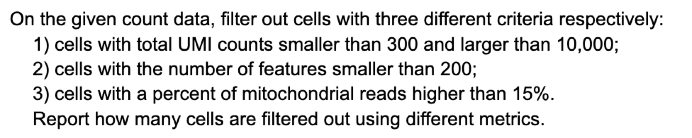
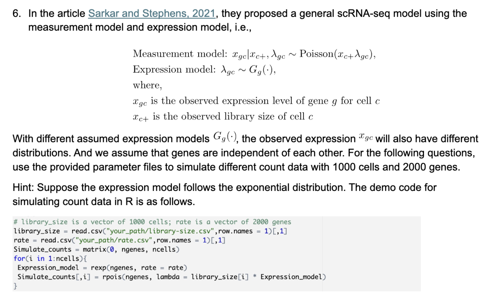

library(tidyverse)
library(dplyr)
library(Seurat)
library(patchwork)
library(Matrix)
library(VennDiagram)
library(sctransform)
library(ggplot2)
library(BayesTools)
library(gridExtra)Stat M254 Homework 1
Due Apr 27 @ 11:59PM
{r})
Part 1: Real data [using the data from pbmc.csv]
Problem 1

Answer:
cell_meta <- read.csv("data/pbmc.csv", row.names = 1)pbmc <- CreateSeuratObject(counts = cell_meta, project = "pbmc")pbmcAn object of class Seurat
33694 features across 5000 samples within 1 assay
Active assay: RNA (33694 features, 0 variable features)
1 layer present: counts# metric 1
pbmc1 <- subset(pbmc, subset = nCount_RNA > 300 & nCount_RNA < 10000)
pbmc1An object of class Seurat
33694 features across 4844 samples within 1 assay
Active assay: RNA (33694 features, 0 variable features)
1 layer present: counts# metric 2
pbmc2 <- CreateSeuratObject(counts = cell_meta, project = "pbmc",
min.features = 200)
pbmc2An object of class Seurat
33694 features across 4900 samples within 1 assay
Active assay: RNA (33694 features, 0 variable features)
1 layer present: counts# metric 3
pbmc[["percent.mt"]] <- PercentageFeatureSet(pbmc, pattern = "^MT-")
pbmc3 <- subset(pbmc, subset = percent.mt < 15)
pbmc3An object of class Seurat
33694 features across 4944 samples within 1 assay
Active assay: RNA (33694 features, 0 variable features)
1 layer present: countsMetric 1(UMI) filtered 156 samples. Metric 2(gene counts) filtered 100 samples. Metric 3(mitochondrial reads) filterd 56 samples.
Problem 2
Answer:
allcells <- colnames(pbmc)
QC1 <- colnames(pbmc1)
QC2 <- colnames(pbmc2)
QC3 <- colnames(pbmc3)
cells1 <- setdiff(allcells, QC1)
cells2 <- setdiff(allcells, QC2)
cells3 <- setdiff(allcells, QC3)grid.newpage()
venn.plot <- draw.triple.venn(
area1 = length(cells1),
area2 = length(cells2),
area3 = length(cells3),
n12 = length(intersect(cells1, cells2)),
n23 = length(intersect(cells2, cells3)),
n13 = length(intersect(cells1, cells3)),
n123 = length(Reduce(intersect, list(cells1, cells2, cells3))),
category = c("QC method 1", "QC method 2", "QC method 3"),
fill = c("red", "blue", "green")
)
grid.draw(venn.plot)
Since it is difficult to interpret the Venn diagram with three sets of filtering, I plot the Venn diagram with three set of what had been filtered out for each group.
All these three methods filtered out some similar cells but they also filtered dissimilar cells. In particular,
QC method 1andQC method 2filtered out the 98 same cellsQC method 1andQC method 3filtered out the 6 same cellsQC method 2andQC method 3filtered out the 6 same cellsQC method 1filtered out 58 cells which are not filtered byQC method 2andQC method 3QC method 2filtered out 2 cells which are not filtered byQC method 1andQC method 3QC method 3filtered out 50 cells which are not filtered byQC method 1andQC method 2
There are 6 cells that all three method filtered out.
It is reasonable that cells filtered by QC method 1 and QC method 2 are similar because total UMI counts sums up UMI count in all genes and cells with less genes are likely to have less total UMI counts. It also makes sense that cells filtered by QC method 3 are likely dissimilar to the other 2 QC methods since mitochondrial reads are not directly related to UMI counts or gene occurrance.
Problem 3
Answer:
log1pPF = function(counts){
ls = colSums(counts)
meanLS = mean(ls)
mat = t(log1p(apply(counts, 1, function(x) x / ls * meanLS)))
return(mat)
}#filter data
pbmc <- CreateSeuratObject(counts = cell_meta, project = "pbmc",
min.cells = 10, min.features = 200)
pbmc[["percent.mt"]] <- PercentageFeatureSet(pbmc, pattern = "^MT-")
pbmc_filtered <- subset(pbmc,
subset = nCount_RNA > 300 & nCount_RNA < 10000
& percent.mt < 15)pbmc_filteredAn object of class Seurat
15708 features across 4790 samples within 1 assay
Active assay: RNA (15708 features, 0 variable features)
1 layer present: counts# Normalize the data
pbmc_norm1 <- NormalizeData(pbmc_filtered,
normalization.method = "LogNormalize",
scale.factor = 10000)
pbmc_norm2 <- NormalizeData(pbmc_filtered,
normalization.method = "LogNormalize",
scale.factor = 1000000)
# run sctransform
pbmc_norm3 <- SCTransform(pbmc_filtered, variable.features.n = 15708,
verbose = FALSE)
pbmc_norm4 <- log1pPF(pbmc_filtered[['RNA']]$counts)
pbmc_norm4 <- CreateSeuratObject(counts = pbmc_norm4, project = "pbmc")Problem 4
Answer:
# Function to plot mean vs. variance
plotMVP <- function(SeuratObj, name, type, color){
counts_matrix <- GetAssayData(SeuratObj, slot = type)
counts_matrix <- as.matrix(counts_matrix)
gene_means = rowMeans(counts_matrix)
gene_variances = apply(counts_matrix, 1, var)
gene_data = data.frame(
Mean = gene_means,
Variance = gene_variances
)
p <- ggplot(gene_data, aes(x = Mean, y = Variance, color = name)) +
geom_point(alpha = 0.5) +
labs(x = "Mean Expression", y = "Gene Variance",
title = paste0("Mean vs Variance: ", name)) +
theme_minimal() +
scale_color_manual(values = color) +
theme(plot.title = element_text(size = 10), # Reduce title font size
plot.margin = unit(c(1, 1, 1, 1), "lines"), # Adjust plot margins
legend.position = "none") # Hide the legend
return(p)
}# Generate plots with specific colors
p0 <- plotMVP(pbmc_filtered, "Unnormalized", "counts", "red")
p1 <- plotMVP(pbmc_norm1, "Log1p CP10K", "data", "blue")
p2 <- plotMVP(pbmc_norm2, "Log1p CP1M", "data", "green")
p3 <- plotMVP(pbmc_norm3, "scTransform", "data", "purple")
p4 <- plotMVP(pbmc_norm4, "Log1p PF", "counts", "orange")
# Arrange plots in a grid
grid.arrange(p0, p1, p2, p3, p4, ncol = 2, nrow = 3)
Before normalization, There exists outlier genes with extreme variance, extreme mean, or both. This makes it difficult to observe the true mean variance relationship from the data. After normalization, the extreme outliers are being normalized so the mean and variance are within a reasonale scale for us to observe the relationship. Both four normalization show s a pattern that variance starts increasing with mean and then decrease at a certain point with increase of the mean. log1pCP10K and log1pCP1M show more extreme concave pattern than the other two normalization methods. It seems like all four normalization methods do not stabilize the variance. As mean increases, the variance changes according to the mean. This is a typical sign that variance is not stable across the mean.
Problem 5
Answer:
# Function to calculate Spearman correlation between mean and variance of gene expression
calculateSpearman <- function(seurat_obj, type) {
# Get the data
data_matrix <- GetAssayData(seurat_obj, slot = type)
data_matrix <- as.matrix(data_matrix)
# Calculate mean and variance
means = rowMeans(data_matrix)
variances = apply(data_matrix, 1, var)
# Calculate Spearman correlation
correlation = cor(means, variances, method = "spearman")
return(correlation)
}# Calculate Spearman correlation for each normalization method
spearman_filtered <- calculateSpearman(pbmc_filtered, "counts")
spearman_norm1 <- calculateSpearman(pbmc_norm1, "data")
spearman_norm2 <- calculateSpearman(pbmc_norm2, "data")
spearman_norm3 <- calculateSpearman(pbmc_norm3, "data")
spearman_norm4 <- calculateSpearman(pbmc_norm4, "counts")
# Print the Spearman correlations
print(paste("Spearman correlation for unnormalized data:", spearman_filtered))[1] "Spearman correlation for unnormalized data: 0.995211040210693"print(paste("Spearman correlation for log1pCP10K:", spearman_norm1))[1] "Spearman correlation for log1pCP10K: 0.998688010272964"print(paste("Spearman correlation for log1pCP1M:", spearman_norm2))[1] "Spearman correlation for log1pCP1M: 0.9987682882677"print(paste("Spearman correlation for scTransform:", spearman_norm3))[1] "Spearman correlation for scTransform: 0.999359445729681"print(paste("Spearman correlation for log1pPF:", spearman_norm3))[1] "Spearman correlation for log1pPF: 0.999359445729681"I do not think normalization could stabilize mean in this example. The Spearman correlation between mean and variance is still high after normalization. This indicates that the variance is still highly dependent on the mean. Reversely, unnormalized data has relatively the least correlation. Among the four normalization method, log1pCP1M gives relatively the lowest correlation. However, all correlations are super high and very close to each other.
Part 2: Simulated data
Problem 6

1)
Answer:
#Simulate data
set.seed(321)
ncells = 1000
ngenes = 2000
library_size = read.csv("data/library-size.csv", row.names = 1)[, 1]
point_mass = read.csv("data/point-mass.csv", row.names = 1)[, 1]
Simulate_counts_1 = matrix(0, ngenes, ncells)
for(i in 1:ncells){
Expression_model = point_mass
Simulate_counts_1[,i] = rpois(ngenes,
lambda = library_size[i] * Expression_model)
}Based on definition of point mass distribution, \(P(\lambda_{gc}=\alpha_g) = 1\)
Thus, \(\lambda_{gc}\) is a constant of \(\alpha_g\) for all g and c
\(X_{gc}\sim Poisson(x_{c+}\alpha_g)\)
2)
Answer:
set.seed(321)
ncells = 1000
ngenes = 2000
#Simulate data
library_size = read.csv("data/library-size.csv", row.names = 1)[, 1]
shape_scale = read.csv("data/shape+scale.csv", row.names = 1)[, c(1, 2)]
Simulate_counts_2 = matrix(0, ngenes, ncells)
for(i in 1:ncells){
Expression_model = rgamma(ngenes, scale = shape_scale[, 1],
shape = shape_scale[, 2])
Simulate_counts_2[,i] = rpois(ngenes,
lambda = library_size[i] * Expression_model)
}Since gamma distribution has the scaling property.
\(x_{c+}\lambda_{gc}\sim Gamma(x_{c+}\alpha_g, \beta_g)\)
\(X_{gc}\sim NB(x_{c+}\alpha_g, \frac{\beta_g}{1+\beta_g})\)
Here is the proof:
Without loss of generality, we will redefine random variables.
Let \(X\sim Poisson(\boldsymbol{\theta})\), \(\boldsymbol{\theta}\sim Gamma(\alpha, \frac{p}{1-p})\)
By definition,
\(p(x;\boldsymbol{\theta})=\int_{0}^{\infty}p(x;\theta)p(\theta)dx\)
Since pdf of poisson and gamma distributions are known, we have:
\[\begin{align*} p(x;\boldsymbol{\theta})&=\int_{0}^{\infty}\frac{\theta^xe^{-\theta}}{x!}\frac{1}{\Gamma(\alpha)(\frac{p}{1-p})^\alpha}\theta^{\alpha-1}e^{-\theta(\frac{1-p}{p})}dx\\ &=\frac{(1-p)^\alpha p^{-\alpha}}{\Gamma(\alpha)x!}\int_{0}^{\infty}\theta^{x+\alpha-1}e^{-\frac{\theta}{p}}dx\\ &=\frac{(1-p)^\alpha p^{-\alpha}}{\Gamma(\alpha)x!}\Gamma(x+\alpha)p^{x+\alpha}\\ &=\frac{\Gamma(x+\alpha)}{\Gamma(\alpha)x!}(1-p)^\alpha p^x\\ &={x+\alpha-1 \choose x}(1-p)^\alpha p^x \quad \text{where } x=0,1,2,\cdots \end{align*}\]
Since \(p(x;\boldsymbol{\theta})\) is a pmf of negative binomial distribution, we have \(X\sim NB(\alpha, p)\)
Problem 7. Answering the following questions
1) Apply four different normalization methods in question 3 on each simulated dataset.
Answer:
sim1 <- CreateSeuratObject(counts = Simulate_counts_1,
min.cells = 10, min.features = 200)sim1_norm1 <- NormalizeData(sim1,
normalization.method = "LogNormalize",
scale.factor = 10000)
sim1_norm2 <- NormalizeData(sim1,
normalization.method = "LogNormalize",
scale.factor = 1000000)
# run sctransform
sim1_norm3 <- Seurat::SCTransform(
sim1,
variable.features.n = nrow(sim1@assays$RNA@layers$counts),
return.only.var.genes = FALSE)
sim1_norm4 <- log1pPF(sim1[['RNA']]$counts)
sim1_norm4 <- CreateSeuratObject(counts = sim1_norm4, project = "sim1")sim2 <- CreateSeuratObject(counts = Simulate_counts_2,
min.cells = 10, min.features = 200)sim2_norm1 <- NormalizeData(sim2,
normalization.method = "LogNormalize",
scale.factor = 10000)
sim2_norm2 <- NormalizeData(sim2,
normalization.method = "LogNormalize",
scale.factor = 1000000)
# run sctransform
sim2_norm3 <- SCTransform(sim2,
variable.features.n = nrow(sim2@assays$RNA@layers$counts),
verbose = FALSE, return.only.var.genes = FALSE)
sim2_norm4 <- log1pPF(sim2[['RNA']]$counts)
sim2_norm4 <- CreateSeuratObject(counts = sim2_norm4, project = "sim2")2) Draw 5 figures with gene means vs variances as in question 4 for each simulated dataset.
Answer:
# Generate plots with specific colors
p0 <- plotMVP(sim1, "Unnormalized", "counts", "red")
p1 <- plotMVP(sim1_norm1, "Log1p CP10K", "data", "blue")
p2 <- plotMVP(sim1_norm2, "Log1p CP1M", "data", "green")
p3 <- plotMVP(sim1_norm3, "scTransform", "data", "purple")
p4 <- plotMVP(sim1_norm4, "Log1p PF", "counts", "orange")
# Arrange plots in a grid
grid.arrange(p0, p1, p2, p3, p4, ncol = 2, nrow = 3)
# Generate plots with specific colors
p0 <- plotMVP(sim2, "Unnormalized", "counts", "red")
p1 <- plotMVP(sim2_norm1, "Log1p CP10K", "data", "blue")
p2 <- plotMVP(sim2_norm2, "Log1p CP1M", "data", "green")
p3 <- plotMVP(sim2_norm3, "scTransform", "counts", "purple")
p4 <- plotMVP(sim2_norm4, "Log1p PF", "counts", "orange")
# Arrange plots in a grid
grid.arrange(p0, p1, p2, p3, p4, ncol = 2, nrow = 3)
3) Use Spearman correlation to evaluate normalization methods as in question 5 for each simulated dataset.
# Calculate Spearman correlation for each normalization method
spearman_filtered <- calculateSpearman(sim1, "counts")
spearman_norm1 <- calculateSpearman(sim1_norm1, "data")
spearman_norm2 <- calculateSpearman(sim1_norm2, "data")
spearman_norm3 <- calculateSpearman(sim1_norm3, "data")
spearman_norm4 <- calculateSpearman(sim1_norm4, "counts")
# Print the Spearman correlations
print(paste("Spearman correlation for unnormalized data:", spearman_filtered))[1] "Spearman correlation for unnormalized data: 0.999244989771759"print(paste("Spearman correlation for log1pCP10K:", spearman_norm1))[1] "Spearman correlation for log1pCP10K: 0.906945581355425"print(paste("Spearman correlation for log1pCP1M:", spearman_norm2))[1] "Spearman correlation for log1pCP1M: 0.837004724535116"print(paste("Spearman correlation for scTransform:", spearman_norm3))[1] "Spearman correlation for scTransform: 0.992175528934755"print(paste("Spearman correlation for log1pPF:", spearman_norm3))[1] "Spearman correlation for log1pPF: 0.992175528934755"# Calculate Spearman correlation for each normalization method
spearman_filtered <- calculateSpearman(sim2, "counts")
spearman_norm1 <- calculateSpearman(sim2_norm1, "data")
spearman_norm2 <- calculateSpearman(sim2_norm2, "data")
spearman_norm3 <- calculateSpearman(sim2_norm3, "data")
spearman_norm4 <- calculateSpearman(sim2_norm4, "counts")
# Print the Spearman correlations
print(paste("Spearman correlation for unnormalized data:", spearman_filtered))[1] "Spearman correlation for unnormalized data: 0.969916316626626"print(paste("Spearman correlation for log1pCP10K:", spearman_norm1))[1] "Spearman correlation for log1pCP10K: 0.996779222818654"print(paste("Spearman correlation for log1pCP1M:", spearman_norm2))[1] "Spearman correlation for log1pCP1M: 0.970198820511449"print(paste("Spearman correlation for scTransform:", spearman_norm3))[1] "Spearman correlation for scTransform: 0.979206170967878"print(paste("Spearman correlation for log1pPF:", spearman_norm3))[1] "Spearman correlation for log1pPF: 0.979206170967878"